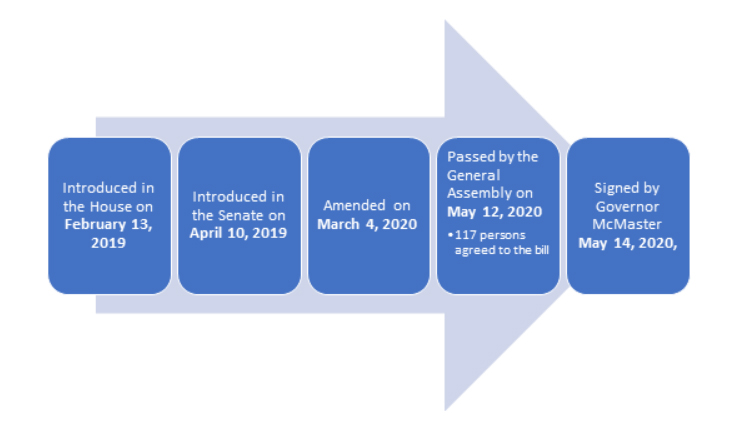
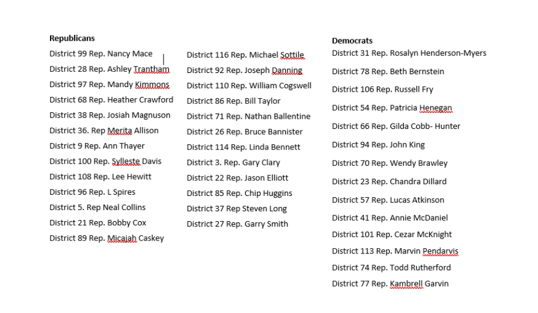

- Introduced on February 13, 2019.
- At this time, thirty-eight congress people sponsored the amendment of the 1976 Code of Laws of South Carolina section 24-13, adding section 24-13-35
- Bill addresses pregnant and postpartum inmates’ rights
- South Carolina General Assembly put into law that pregnant, laboring, and inmates who have given birth within thirty days could not be unnecessarily restrained.
- It also put into statute that facilities must provide feminine hygiene products, prenatal care, weekly visitation time for inmates with dependents, and limit body cavity searches done by male officers to female inmates
Timeline
Bill Sponsors
Out of the thirty-eight representatives who originally sponsored the bill; twenty-five of the sponsors were members of the republican party, thirteen from the democratic party.
